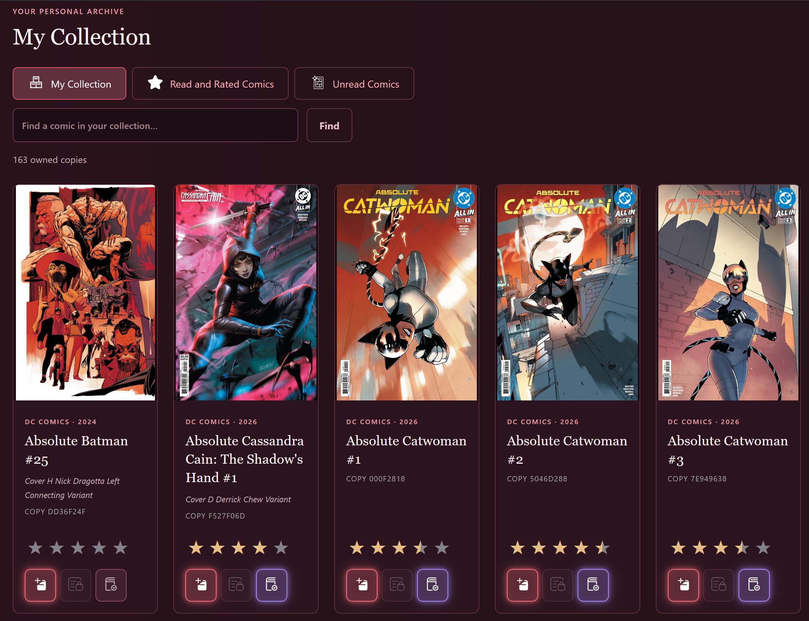
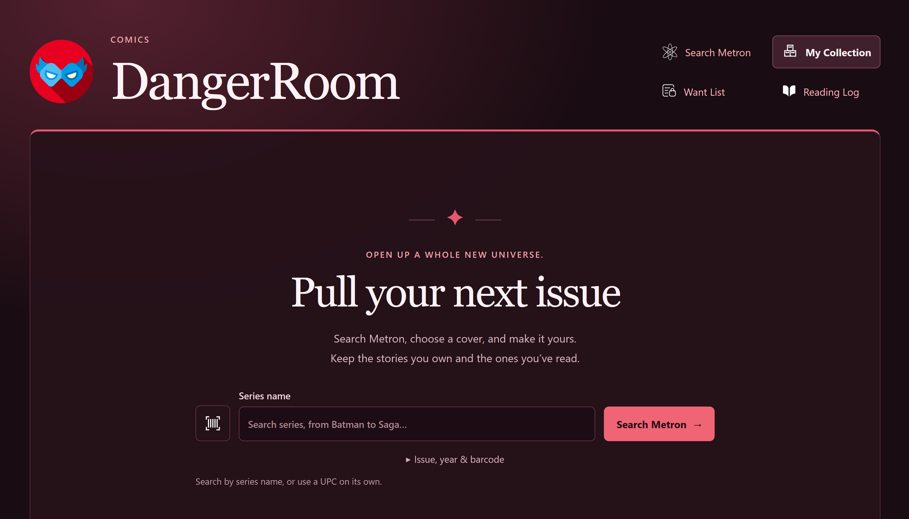
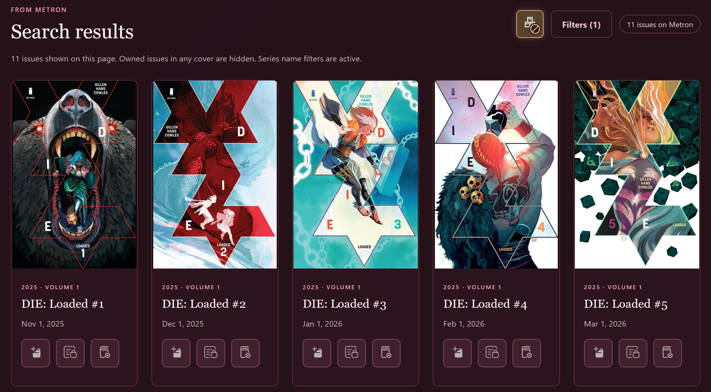
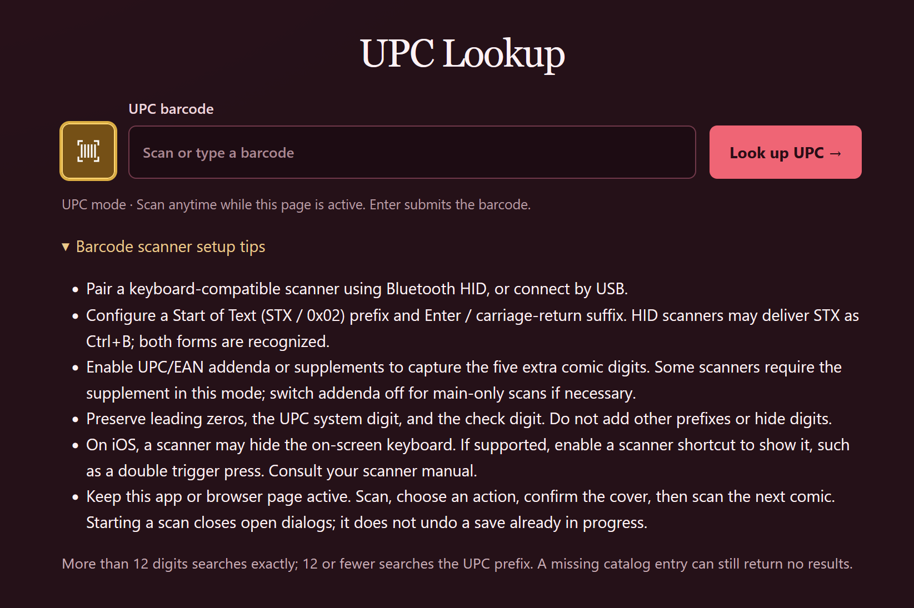
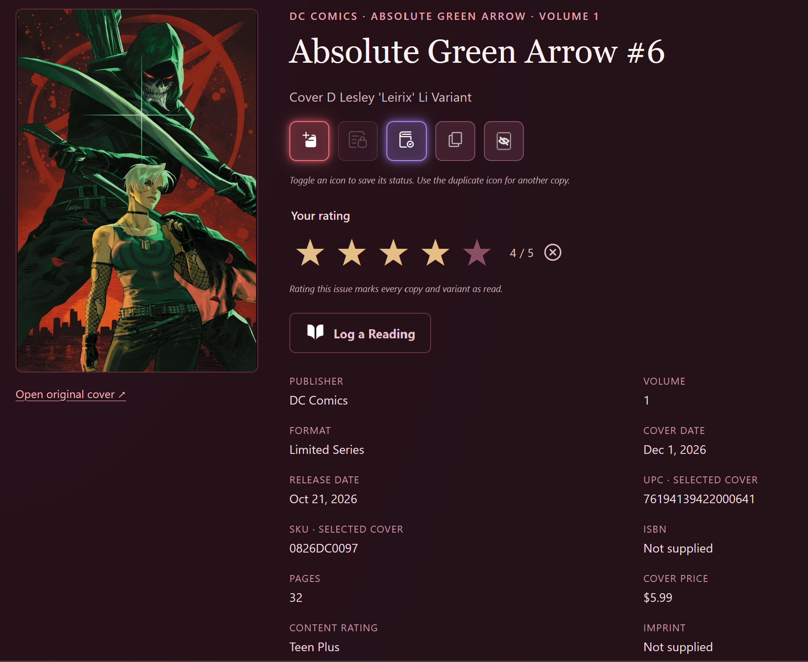
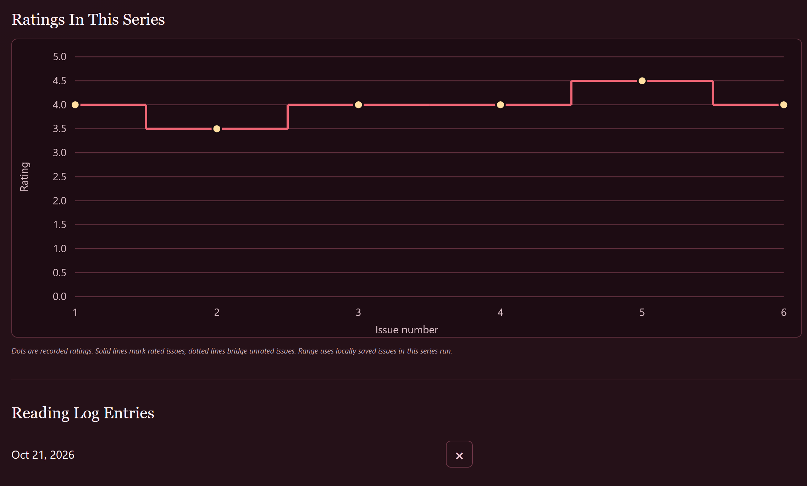
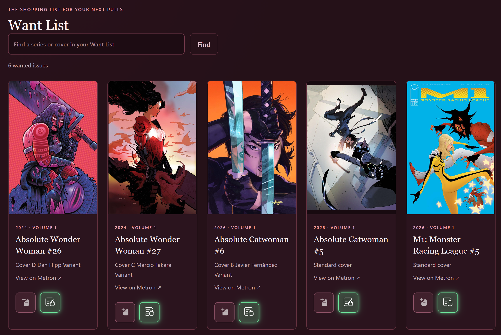
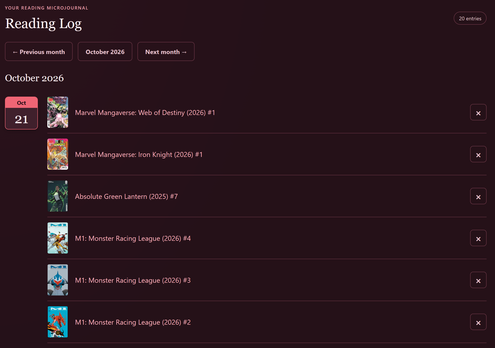
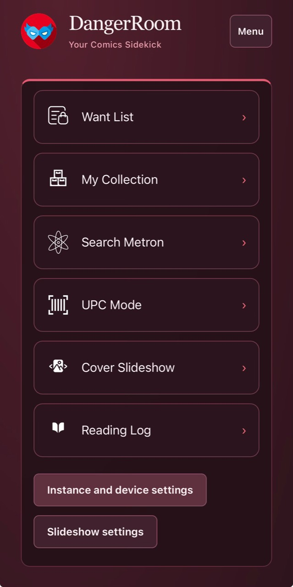
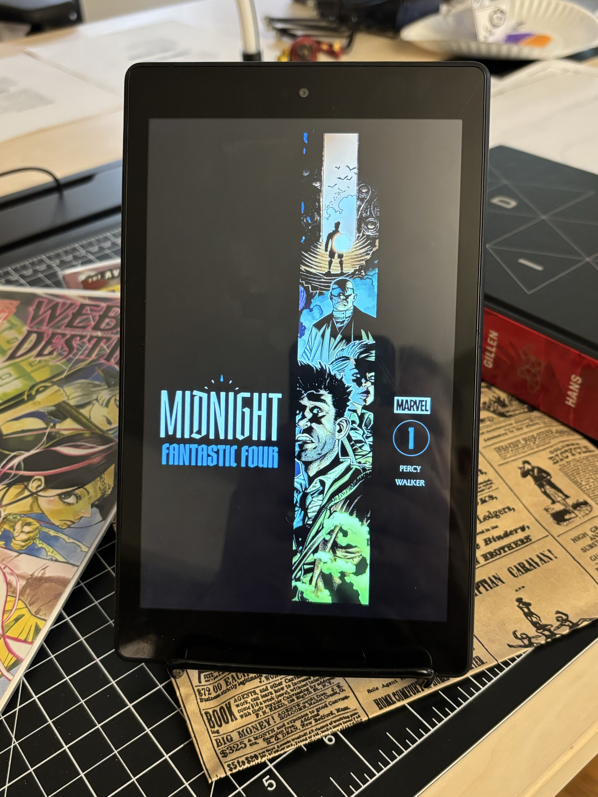

01Collection inventory
Keep track of what you own and have read. Catalog individual copies and exact covers, including variants, and browse your collection in one place.


Comic inventory & reading journal · Self-hosted · v1.0.0
Give your comics a home of their own. Catalog the exact editions you own, keep track of the covers you want, and remember what you read—all in a Danger Room instance you run yourself.
Enter the Danger Room
Keep track of what you own and have read. Catalog individual copies and exact covers, including variants, and browse your collection in one place.

Explore a universe of comic data through the open API hosted by metron.cloud. Search its growing catalog for series, issues, and cover variants, then bring metadata and artwork into your collection. Fresh lookups draw on the latest available catalog data, while saved records and cached results keep everyday browsing fast. Updates arrive through searches and imports; existing collection records are not automatically refreshed.



Rate your comics on a 5-star scale, with half-star steps. Your rating stays with the issue across its copies and covers.


Add comics to your Want List to review later at your friendly neighborhood comic shop. Save the exact covers you want, including variants of issues you already own.

Keep track of what comics you’ve read and when. Record reading dates, revisit your journal by month, and log rereads as separate entries.

Connect to your Danger Room instance from your Android phone or tablet, iPhone, or iPad. Browse your collection, check your Want List, rate comics, and record your reading on the go. Install and connect Hard Light →

Put your owned covers on display with a full-screen slideshow in Hard Light. Choose your pace and transitions, and hide individual covers from playback. Explore Cover Slideshow ↓

Cover Slideshow · In Hard Light for Android & iOS

Play saved artwork from your owned editions in a full-screen, screen-awake display. Duplicate copies appear once; different variants stay separate. Captions and controls fade out, and a tap brings them back.
Set timing and transitions under Menu → Slideshow settings, then choose Cover Slideshow.
Your instance, your records
Your collection, wants, ratings, and journal live in SQLite. Saved metadata and cover images are reused when you browse, so revisiting your collection does not call Metron again.
Metron supplies metadata and artwork through read-only requests. Searches are cached and paced; there is no background collection synchronization and Danger Room does not modify your Metron collection.
Cover originals live in local storage by default, with optional private S3 storage. Back up the database, covers, and configuration together. You control the instance and its retention.
Storage & S3 guide ↗No user accounts to create or manage. Each instance holds one shared collection for use on a private network or through Tailscale. Danger Room is not intended to be exposed directly to the public Internet.
Run your own Danger Room
You need your own instance, or access from someone who runs one.
node:sqlite module, so no separate database server or SQLite installation is needed.Keep it private. Danger Room has no user accounts and browser access has no sign-in. Run it on a trusted private network or through Tailscale, rather than exposing it to the public Internet. Provision device-specific credentials for use with the Hard Light companion app.
For a fresh collection, clone the repository and prepare private configuration:
git clone https://github.com/erickolb/DangerRoom.git
cd DangerRoom
cp .env.example .env
chmod 600 .env
vi .env
sudo docker compose build --pull
sudo docker compose up -dSet METRON_API_TOKEN and ALLOWED_HOSTS. Compose binds port 4340 to loopback; put your HTTPS proxy in front and preserve the original Host header.
Follow the deployment guide for proxy settings, importing data, and verification. Without Docker, prepare configuration, run pnpm install --frozen-lockfile, then pnpm start. The default local address is http://127.0.0.1:4340.
Already running Danger Room?
The Android and iOS companion connects to your instance and puts your saved covers on display. Get the Android APK with Obtainium or the iOS IPA with SideStore, and connect your device.
Hard Light for Android & iOS →